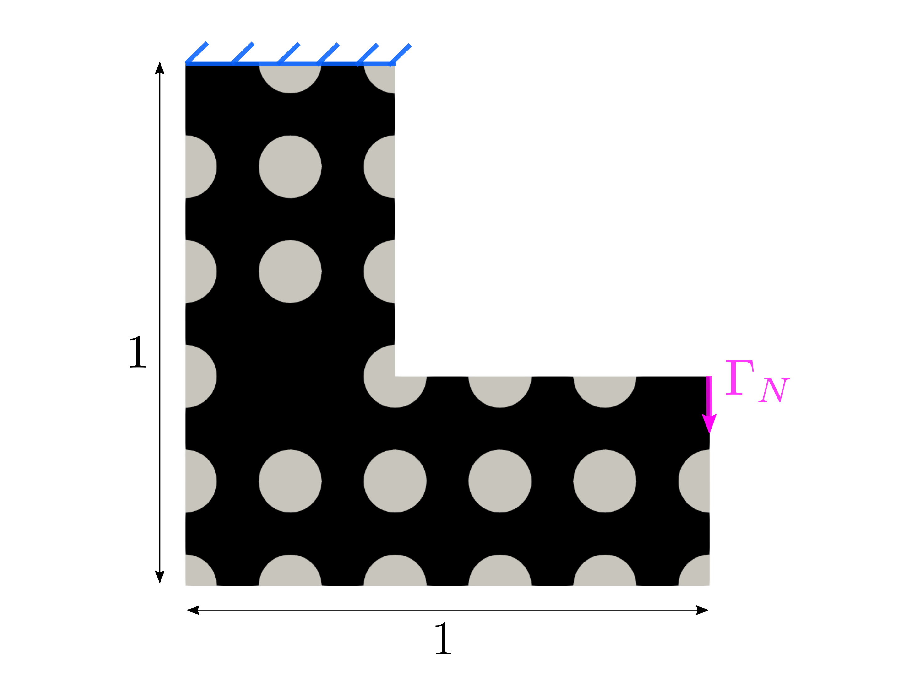
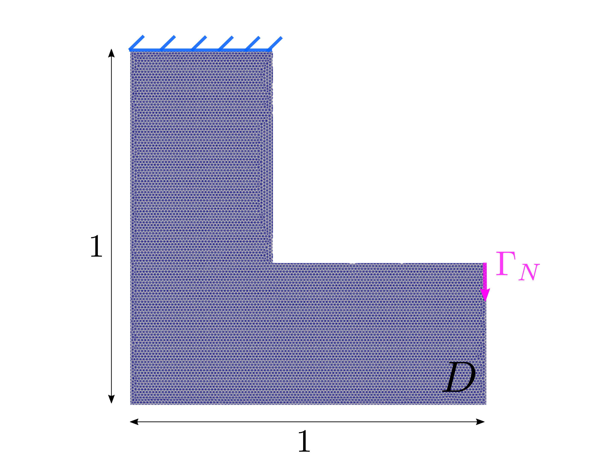

Lp norm of Von Mises criteria minimization¶
Running the Tutorial¶
To reproduce this stress-minimization example, navigate to the src directory and execute the main script with the Von Mises parameter file:
cd src
python3 main.py parameters/param_vonMises.txt
Visualization in ParaView: The results are saved in src/res/results.xdmf. Open this file in ParaView, click Apply, and use the time-player controls to animate the geometry. The videos below were generated using exactly this method, showing the simultaneous evolution of the topology and the cost function.
Problem definition¶
In this tutorial, we aim to find the optimal shape, \(\widetilde{\Omega}\subset D\), that minimizes the global stress within the structure. To achieve this in a differentiable manner, we minimize the \(L^p\) norm of the Von Mises stress criterion across the linear elastic material, subject to Dirichlet and Neumann boundary conditions and a strict volume constraint.
The continuous optimization problem is formally defined as:
where \(\overline{V}\) is the target volume constraint, and \(\sigma_{VM}(u)\) is the positive scalar Von Mises yield criterion, defined as:
with the deviatoric stress tensor \(s(u)\):
To improve numerical conditioning, \(\sigma_{VM}\) is normalized by \(\overline{\sigma}\), an arbitrary strictly positive scaling factor.
Shape derivative¶
To efficiently solve the continuous constrained problem (1), we introduce the auxiliary functional:
Using the chain rule, the shape derivative of the actual cost \(J(\Omega)\) is obtained as:
Through Céa’s method (and the introduction of an adjoint state \(p_{\Omega}\) due to the non-self-adjoint nature of the stress functional), the shape derivative reduces to an integral over the boundary \(\partial\Omega\):
The Augmented Lagrangian Method (ALM) is employed to encapsulate the volume constraints:
yielding the final augmented shape derivative:
The descent direction \(v(u_{\Omega},p_{\Omega})\) directly mirrors the shape derivative boundary integrand, heavily relying on both the primal displacement \(u_{\Omega}\) and the adjoint dual state \(p_{\Omega}\):
Algorithm¶
Unlike compliance minimization, the stress minimization problem is non-self-adjoint. This implies that at every iteration, OptiCut must solve both the primal physical problem and a separate adjoint problem to evaluate the sensitivity.
BEGIN
uh ← Solve Primal problem : a(u,v) = l(v)
ph ← Solve Dual problem : ∂_u J(Ω;v)|_{u=u_Ω} = a(v,p)
WHILE not converged:
λ_ALM, μ_ALM ← Update ALM parameters
v ← Compute descent direction using uh and ph
v_ext ← Extend velocity
WHILE adv_NAN ≠ 1 :
φ_temp ← Advection
uh ← Solve Primal problem
ph ← Solve Dual problem
φ ← φ_temp
END
Application¶
We investigate an embedded steel “L-shape” beam structure of \(1\text{ m} \times 1\text{ m}\) subjected to a uniformly distributed tensile load on \(\Gamma_{N}\), scaling to \(g=-0.1 e_{y}\text{ GPa}\). We fix the \(L^p\) norm exponent to \(p=10\) and define the scaling factor \(\overline{\sigma } = 3\). The domain \(\Omega \subset D\) is initialized as shown in Figure 11 and discretized with a mesh resolution of \(0.01\text{ m}\) (Figure 12).


Figure 11 Initialization of \(\Omega\subset\text{D}\)¶


Figure 12 Initialization of the L-shape mesh.¶
Implementation Highlights¶
The implementation is largely identical to the compliance minimization problem, demonstrating OptiCut’s modular design. The key difference lies in initializing the VMLp_Problem class and automatically computing the dual (adjoint) problem.
1. Problem Initialization
We load the parameters and explicitly request the Von Mises problem topology solver.
1from utils.config_utils import load_parameters
2from config.problem import VMLp_Problem
3
4parameters = load_parameters(use_file=1, filename="param_VonMises.txt")
5problem_topo = VMLp_Problem()
2. Primal and Dual Problem Resolution
At each optimization step, OptiCut evaluates the linear elasticity state (Primal), computes the dual operator specific to the Von Mises criterion using automatic differentiation via UFL, and solves the adjoint system (Dual).
1# Solve Primal (Displacement)
2uh, _ = CutFemSolver.cutfem_solver(ls_func, parameters, problem_topo)
3
4from utils import data_manipulation
5
6# Evaluate Dual Operator specific to the Von Mises topology
7vm_calculator = data_manipulation.VonMisesCalculator(msh, V_ls, spaces["Q"], uh, CutFemSolver.lame_mu, CutFemSolver.lame_lambda, CutFemSolver.level_set)
8vm_list = vm_calculator.compute()
9dual_operator = problem_topo.dual_operator(uh, CutFemSolver.lame_mu, CutFemSolver.lame_lambda, parameters, msh, CutFemSolver.dxq, vm_list)
10
11# Solve Dual (Adjoint State)
12ph = CutFemSolver.adjoint_problem(uh, dual_operator)

Figure 13 Displacement field of the first iteration with CutFEM.¶

Figure 14 Adjoint dual state field of the first iteration with CutFEM.¶
3. Shape Derivative and Descent
The velocity field calculation takes into account both uh and ph seamlessly. OptiCut’s unified descent_direction function hides the complexity of assembling these combined non-linear boundary integrals.
1from levelset.velocity_tools import prepare_descent, descent_direction, velocity_normalization
2
3# Evaluate constraint and shape derivative integrands
4constraint = problem_topo.constraint(uh, CutFemSolver.lame_mu, CutFemSolver.lame_lambda, parameters, CutFemSolver.dxq, 0)
5shape_derivative_integrand_constraint = problem_topo.shape_derivative_integrand_constraint(uh, ph, CutFemSolver.lame_mu, CutFemSolver.lame_lambda, parameters, CutFemSolver.dxq)
6shape_derivative = problem_topo.shape_derivative_integrand(uh, ph, CutFemSolver.lame_mu, CutFemSolver.lame_lambda, parameters, CutFemSolver.dxq)
7
8# Regularize and normalize the velocity
9resources = prepare_descent(msh, V_ls, parameters)
10v_reg = descent_direction(ls_func, msh, parameters, bc_velocity, V_ls, constraint, shape_derivative_integrand_constraint, shape_derivative, resources)
11
12# Normalize velocity in place
13norm_factor = velocity_normalization(v_reg, parameters.alpha_reg_velocity)
14v_reg.x.array[:] *= norm_factor
15v_reg.x.scatter_forward()
CutFEM Solution for Von Mises¶
The results of the stress-minimization optimization with the CutFEM method exhibit a design strictly distinct from pure compliance minimization. Stress concentrations, specifically near the re-entrant L-shape corner, are actively penalized, leading to a much smoother, rounded inner corner characterized by evenly distributed Von Mises stress contours.